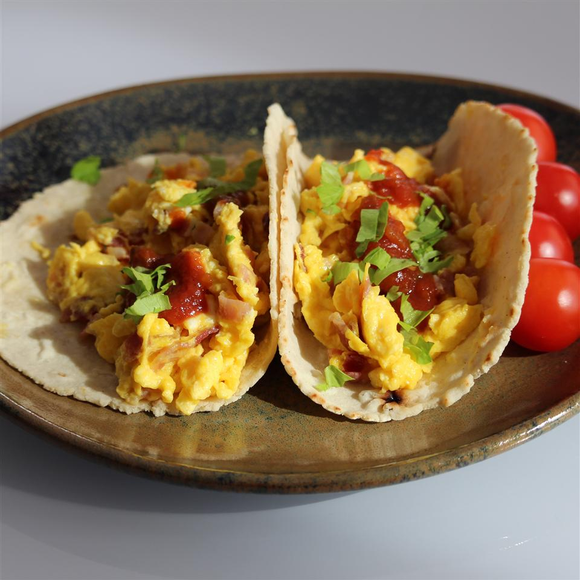

Bacon and Egg Tacos

Description
A quick, easy recipe for Bacon and Egg Tacos. Optionally served with salsa.
These are made with Eggs, Bacon, Butter, Cheese, Salt, Pepper, and Flour Tortillas, with Mild Salsa, and Parsley being optional. The fixings are prepared on a stove-top skillet, with tortillas being warmed either via microwave, or skillet.
Ingredients
- 6 Eggs
- 1/4 Cup Crumbled Cooked Bacon
- 2 Tablespoons Butter
- 3 Slices American Cheese, Diced
- 1/4 Tablespoon Salt
- 1/4 Teaspoon Ground Black Pepper
- 6 Flour Tortillas
- 1 Cup Salsa (Optional)
Steps
- Whisk eggs together in a bowl; stir in bacon.
- Melt butter in a skillet over medium heat. Add egg mixture; cook and stir until eggs are completely set, 2 to 3 minutes. Stir in American cheese, salt, and pepper.
- Wrap tortillas in damp paper towels; microwave until warmed through, 30 seconds to 1 minute.
- Spoon 1/4 cup egg mixture into the center of each tortilla; fold sides to cover. Serve with salsa.
Serving Time & Info
- Prep: 5 Minutes
- Cook: 3 Minutes
- Total: 8 Minutes
- Servings: 6
Nutritional Information
- Protein: 18.9g
- Carbohydrates: 40.5g
- Fiber: 2.9g
- Sugar: 3.2g
- Fat: 22g
- Calories Per Serving: 436